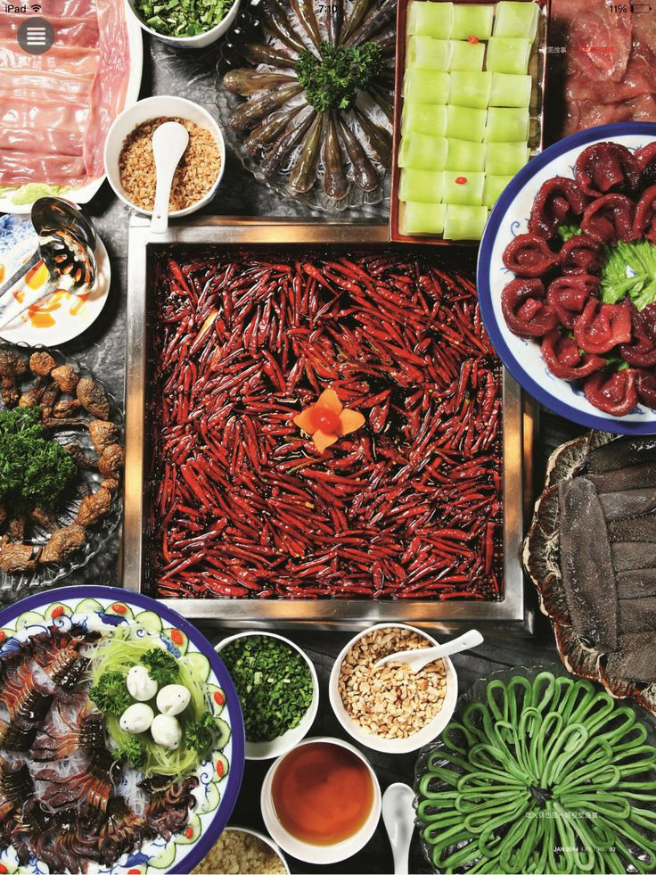
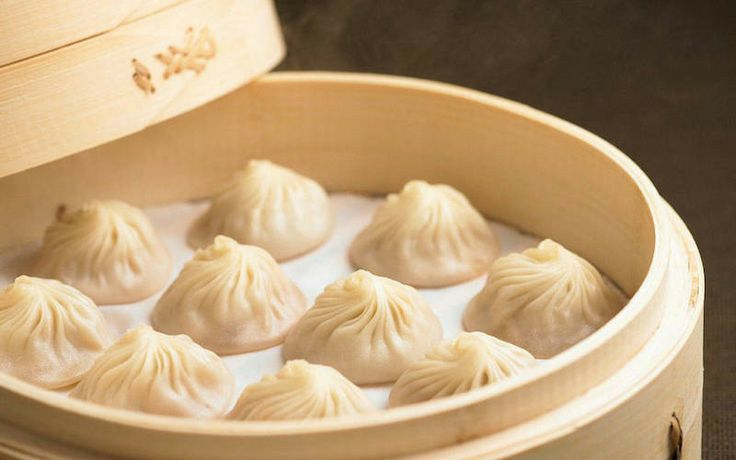
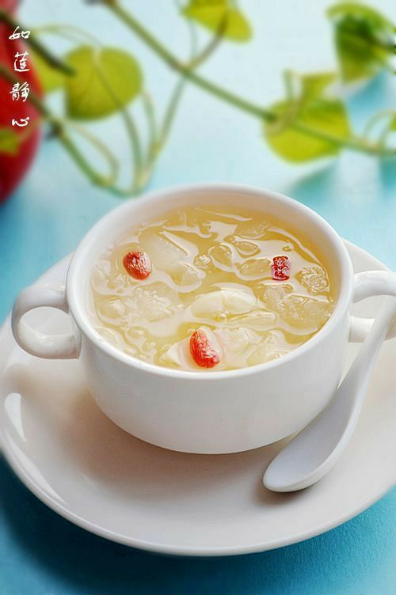

Сичуанська кухня славиться своєю гостротою.
Ґуандунська (кантонська) кухня — здебільшого складається з пісних страв.
У шанхайській кухні переважають солодкі страви.
Шаньдунська кухня — кухня північного Китаю. Від усіх інших вона відрізняється солоними і жирними стравами.
Маньчжурська кухня використовує такі продукти, як пшоно, просо, соєві боби, горох, кукурудзу та сорго.
|

|

|

|